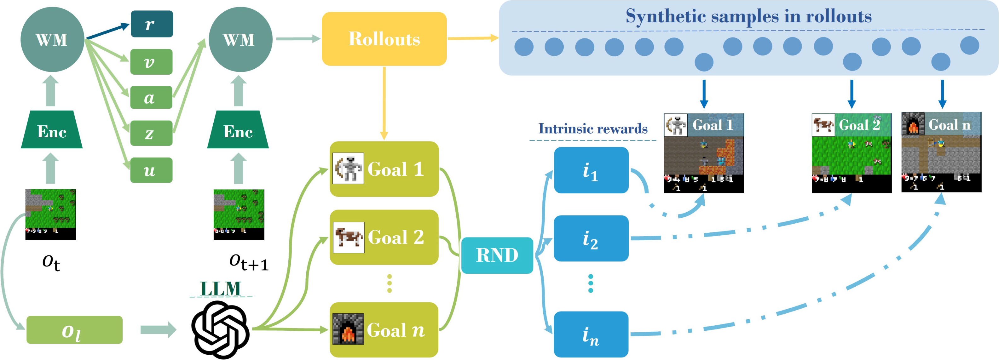
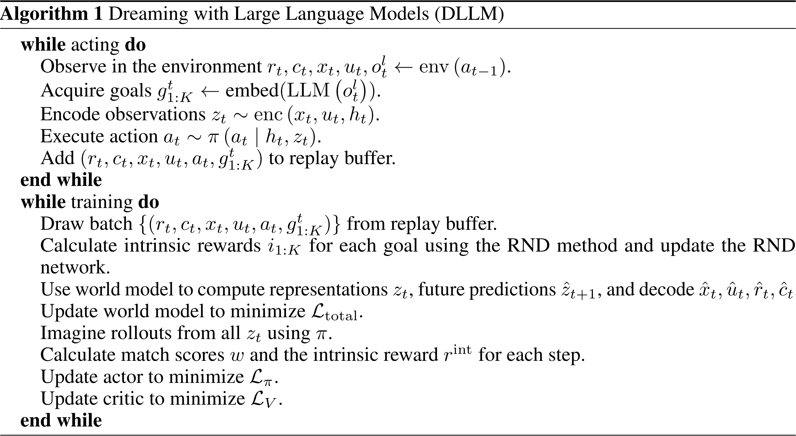

DLLM
Goal Generation
Similar to ELLM, DLLM obtains language caption otl of current observation ot throguh an observation captioner

The observation caption otl and other possible language description about the environment are provided to GPT to generate K suggested goals, which are further encoded to vector embedding gt1:K through SentenceBERT
Intrinsic Reward
To stimulate meaningful and effective exploration, the intrinsic reward in a model rollout is calculated as
rtint=αk=1∑Kw(ut∣gk)⋅ik⋅I(∃tk∧t=tk)
The semantic similarity between goal gk and language description embedding of transition ut is
w(ut∣gk)=∥ut∥∥gk∥ut⋅gk⋅I[∥ut∥∥gk∥ut⋅gk>M]
and tk represents the time step t when w(ut∣gk) first exceeds M withing the rollout horizon. To decrease the intrinsic reward for previously encountered goals, the novelty measure ik is calculated by RND
i=std(e1:B, 1:L, 1:K)e−mean(e1:B, 1:L, 1:K)e(g)=∥f^θ(g)−f(g)∥2
where the f:G↦R is the target network and f^θ:G↦R is the predictor network. The latter is trained to approximate the former. The lower error reveals higher exploration frequency on semantically similar goals
World Model Learning
Following Dreamer v3, the RSSM-based world model in DLLM consists of the following components
| Component |
Type |
Definition |
Description |
| Seqeunce Model |
Generation |
z^t, ht=seq(zt−1, ht−1, at−1) |
Recurrent + Transition (Prior) |
| Encoder |
Inference |
zt∼enc(ot, ut, ht) |
Representation (Posterior) |
| Decoder |
Generation |
o^t, u^t, r^t, c^t=dec(zt, ht) |
Observation Predictor
Transition Predictor
Reward Predictor
Continue Predictor |
The entire world mode is trained through the following objective in an end-to-end manner
Ltotal=Lo+Lu+Lr+Lc+β1Lpred+β2Lreg
| Loss |
Definition |
Loss |
Definition |
| Observation |
Lo=∥o^t−ot∥22 |
Transition |
Lu=catxent(u^t, ut) |
| Reward |
Lr=catxent(r^, twohot(rt)) |
Continue |
Lc=binxent(c^t, ct) |
| Prediction |
Lpred=max[1, DKL(sg[zt] ∥ z^t)] |
Regularizer |
Lreg=max[1, DKL(zt ∥ sg[z^t])] |
Behavior Learning
The actor πθ(at∣zt, ht) and critic Vψ(zt, ht) are trained through behavior learning algorithm in Dreamer v3

where the reward for behavior learning in each step involves both extrinsic reward rt and intrinsic reward rtint